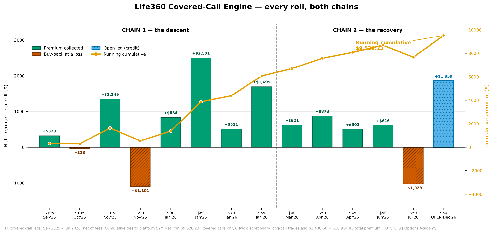
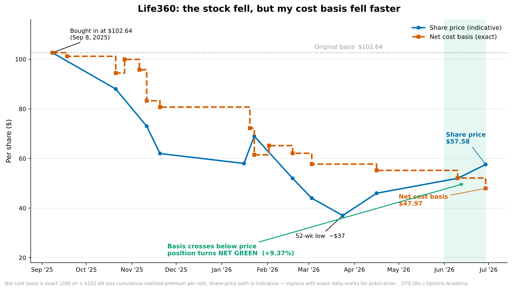

Executive note: This article is a practitioner case study, not an argument for prediction. The central lesson is that process design, position sizing, and repeatable option mechanics can change the emotional and financial profile of a drawdown when the underlying business thesis remains intact.
On September 8, 2025, I bought 200 shares of Life360 (NASDAQ: LIF) at a cost basis of $102.64. The stock had climbed hard and fast, and I knew it could give a good portion of that back. I bought anyway, not on a hunch and not because I imagined I had timed a bottom, but for three reasons I could defend with arithmetic rather than hope:
- The business is solid. I had watched Life360 for a long time. The fundamentals, including users, revenue, and the path to profitability, were genuinely strong. More on that below. This was a considered position in a real company, not a momentum chase.
- It is a credible acquisition target. The obvious acquirers are the very phone makers whose built-in location features compete with it. If a bid ever comes, I want to already be a shareholder when it does. That optionality doesn't decay, and you cannot capture it from the sidelines.
- I had a plan before I clicked buy. The position was deliberately small, a controlled, math-first allocation, and I intended to write covered calls against it from day one. A drawdown was never a threat to that plan. It was fuel for it.
My wishes do not move the market, and I never pretended otherwise. I knew the stock had run up quickly and could pull back, and I made my peace with that before I owned a single share. I did not need to be right about the entry price. If Life360 got acquired, I would profit. If it did not, I would collect premium month after month, drive my cost basis down, and eventually sell at a profit on my own timeline. Both roads paid. I built a position where being early on the entry was survivable, and even profitable, by design.
There was also a quieter reason to keep it small and deliberate: I wanted to study my own behavior in a real drawdown, with real money, but never enough to cloud my judgment. Call it a controlled experiment, with one question worth more to me than this single trade's outcome:
When a sound business gets repriced violently by the market, does options knowledge actually change how a disciplined investor behaves, or do we all eventually press the panic button?
Within months the shares were cut by nearly in half. That was not a crisis; it was a scenario I had already prepared for. Ten months later I have the answer, in numbers that reconcile to the penny. But the numbers are the easy part. The real lesson is about time, temperament, and treating profit and loss as a gradient instead of a verdict.
The External Narrative Versus the Ledger
If you only saw the price chart, you would write the obvious story:
"He bought the top of a hot stock and got stuck holding a 44% loss."
Here is the story the ledger actually tells:
"He built a premium-collection engine on top of a temporarily depressed position, harvested more cash from volatility than the shares lost in value, and never had to sell at the bottom."
Same trade. Two completely different realities. The difference between them is not luck, and it is not market timing. It is one tool, the covered call, applied mechanically, repeatedly, and without drama, by someone who decided the rules before the pain arrived.
Why Life360 Was Worth Owning, Even at a High Price
I had been watching Life360 for a long time before I ever bought a share. The thesis was never about a cheap entry. It was about a durable business that the market would eventually have to pay up for, and a company I genuinely wanted to own a piece of.
The fundamentals are not in question. Life360 closed 2025 with roughly 95.8 million monthly active users, full-year revenue of $489.5 million, up 32%, and, for the first time in company history, annual net income. The momentum carried into 2026: Q1 revenue grew 38% year over year to $143.1 million, monthly active users reached about 97.8 million across more than 180 countries, and a newly broken-out advertising line, powered by the Nativo acquisition, jumped 329% to $19.7 million. The company is dual-listed, on NASDAQ as LIF and ASX as 360, profitable, cash-rich, and sits at roughly one in seven U.S. smartphones.
Yes, it competes with the phone makers' own "find my" features. That competition is real and permanent, but it cuts both ways. The same big-tech players who compete with Life360 are also its most logical acquirers. A platform with approximately 98 million engaged families, deep first-party location data, and a profitable subscription engine is exactly the kind of asset a larger company buys rather than rebuilds. That acquisition optionality was a real part of my decision: it is upside you can only hold if you are already a shareholder, and it is a reason you do not casually dump the stock into a drawdown. The moat, meanwhile, is the use case itself. Families do not abandon the app that watches over their children, parents, pets, and cars, and the trusted data that flows from that is what now powers the advertising business.
So, I was clear-eyed about the entry. The stock had run up hard and fast, and the pullback was entirely plausible. I bought anyway because the price was never the load-bearing part of the decision. The company was, the acquisition optionality was, and, above all, the management plan was. I was comfortable with the shares falling because I had the covered-call framework ready before I owned them.
So, what went wrong? Nothing in business. Everything was in the multiple. After a huge run, LIF got caught in growth-stock compression. The market punished the valuation even as revenue, users, and profitability all climbed. The stock fell from the $103 region to a 52-week low near $37, and the share price spent six months falling roughly 40% while the company kept posting records.
That gap, with the thesis intact while the price collapsed, is the entire reason this trade was a candidate for rolling instead of cutting. It is the single most important filter in this whole piece, and I will come back to it.
I sized the position small on purpose. It was large enough that a loss would feel real, because you cannot test your temperament with money you do not care about, but small enough that a 50% equity drawdown would not dent the broader portfolio. That sizing decision is what made everything downstream possible. It removed the "I cannot afford to be wrong" voice and left only the question I actually wanted to study: what is the optimal process here?
The Mechanics: A Rolling Covered-Call Ladder
From the day I owned the shares, I sold calls against them and rolled relentlessly. Somewhere in those first weeks, I stopped managing the stock and started managing the premium stream. That shift is the whole article.
The logic of every single roll was identical and boring:
- When a short call is tested or approached expiration, buy it back and sell a new one for a net credit.
- Adjust the strike to stay sensible relative to where the stock actually was.
- Extend duration when it bought more time value to harvest.
- Keep doing this as long as the business thesis is held.
The strikes tell the story of the stock all by themselves. They walked down as LIF fell, then back up as it recovered:
105, 90, 80, 70, and 65 during the descent in autumn 2025; 60, 50, and 45 during the bottoming phase in winter 2026; and 50 and 60 during the recovery in spring and summer 2026.
A few moments are worth pulling out of the full ledger, because they show how this works in practice rather than in theory.
The September open. I sold the first 105-strike calls the day I bought the shares. The stock was near my basis, so the calls were near the money and rich. The experiment funded itself from minute one.
The November harvest, which was the big one. As LIF cratered into the $60s and $70s, implied volatility spiked. High implied volatility is the covered-call seller's payday because richer option prices mean larger credits. On November 6, with the stock falling hard, I sold 80-strike calls for $16.60. A premium that large is only available when fear is present. Five days later, I bought them back for $4.08. Net: +$2,501.32 on a single roll, with cumulative premium now around $3,875. The income engine did its best work precisely when the share price was at its worst.
The January gift. The 65-strike calls I sold on November 20 simply expired worthless on January 20 because the stock was well below the strike. Net: +$1,694.66, with zero closing cost. A full premium, kept in its entirety, paid for by the very weakness that was scaring everyone else out. Entering 2026, the position had collected roughly $6,081.
The recovery sells. As LIF based near $37 and turned, I kept selling: 60s, 50s, and 45s. I collected smaller but steady credits and let some potential assignment upside ride. Today, June 29, 2026, with the stock recovered into the high $50s, I sold two December 60-strike calls for $9.30 each: a fresh $1,859.42 credit that funds the position straight through year-end.
I will be honest about one detour, because hiding it would undercut the whole point of transparent education: during a sharp late-January spike, I also made two long call trades. They were not covered calls, but directional bets on the move. One worked (+$2,153.30), and one did not (−$744.70), for a net gain of +$1,408.60. That was discretionary trading layered on top of the system, and I am separating it from the covered-call engine on purpose, so the core math stays clean.

Figure 1 — The income engine, leg by leg, across both chains. Each bar is one roll's net premium: green collected, the orange-hatched pair are the two roll-downs I bought back at a loss, and the blue bar is the open December leg. The orange line is the running total climbing to $9,526.23 in covered-call premium. The two discretionary long-call trades sit outside this view and add $1,408.60 on top, for $10,934.83 total. Notice where the engine did its heaviest lifting — the $2,501 November roll — was exactly when the stock was falling hardest.
The Uncomfortable Rolls
Not every roll felt good. Twice, the stock bounced against a call I had just sold, and the disciplined move was to buy that call back at a loss: about −$1,100 in late October, and again −$1,028 last week when LIF rallied through a 50-strike I was short. Closing a leg in the red runs against every instinct a trader has.
But here is the thing: the discomfort was never emotional for me. It was arithmetic. A losing buyback that lets me re-sell a higher, longer-dated call for a larger credit is still a net-positive decision for the position. I was never trying to win every individual leg. I was lowering the basis of the whole holding, one roll at a time. When that is the scoreboard you are watching, a red number on a single leg stops being a wound and becomes a line item.
The Breakeven Walk: Where the Math Changes the Psychology
If you charted this, you would watch two lines move toward each other: the share price plunging, and my net cost basis dropping even faster, until the basis line slips beneath the price and the position quietly turns green. Here is the part most investors never get to see, because they sell long before it happens.
| Metric | Amount | Per share |
|---|---|---|
| Original position: 200 shares at $102.64 | $20,528.00 | $102.64 |
| Equity P&L at current mark, approximately $57.58 | −$9,012.00 | — |
| Equity return on the shares alone | −43.90% | — |
| Total premium collected, all options activity | +$10,934.83 | $54.67 |
| Net cost basis: $20,528.00 less $10,934.83 | $9,593.17 | $47.97 |
| Current equity value | $11,516.00 | $57.58 |
| Net P&L on the position | +$1,922.83 | — |
| Net return | +9.37% | — |

Figure 2 — The stock fell, but my cost basis fell faster. The dashed line, exact and derived from realized premium at each roll, is my net cost basis; the solid line is the share price. The basis drops faster than the stock, so when LIF recovers, the price crosses back above the basis, and that crossing is the moment the position turns net-positive.
Read that twice.
The shares are down 43.9%. The position is up 9.37%.
The premium I collected ($10,934.83) is larger than the entire drawdown in the stock ($9,012). My net cost basis has fallen from $102.64 to $47.97 per share, and the stock now trades around $57.58. I am green on a net basis while the share price is still roughly $45 below where I bought it.
If you want the conservative version, counting only realized covered-call premium and ignoring the open December credit and the directional trades, the number is still $7,666.81. That is a 37% return on the cost basis in under ten months, and a net breakeven of $64.31. Either way you cut it, the math has inverted the trade. The drawdown did not disappear. It got out-earned.
The Psychology: Where the Real Edge Lives
Let me dismantle a myth about myself before anyone builds one. I am not immune to loss aversion. Watching a position fall 44% is unpleasant for me exactly as it is for you. The difference was never superhuman discipline. The difference was having a better script than "sell to make the pain stop."
Three ideas did the heavy lifting.
Profit and loss is a gradient, not a binary. Most people experience a drawdown as a single shameful verdict: I was wrong. But the position was never one number frozen in time. Every roll, including the November 80-strike that paid $2,501 while the stock was collapsing, converted a sliver of paper loss into realized cash that permanently lowered my breakeven. When you can see your basis dropping in real time, the red number on the screen loses its grip on you.
Impatience is the enemy; time is the asset. I never needed LIF to recover fast. I needed it to recover eventually, and I was paid handsomely to wait. That worthless-expiring 65-strike in January was the market handing me $1,694 simply for being patient. A good business that gets cheap is not a problem to be escaped in 48 hours; it is a runway over which you collect rent.
Knowing the company is a virtue. This is the filter that makes the whole thing legitimate. I kept rolling because I had conviction in the business. Revenue, users, and profitability were all climbing. I did not keep rolling merely because I hoped the stock price would bounce. Those are different things and conflating them is how people rationalize riding a genuinely broken company to zero.
Which brings me to the most important section in this entire piece.
When the Framework Works, and When It Fails
This is not my primary strategy, and it should not be yours. It is a tool for one specific situation: a position where the underlying business thesis is intact, but the price has temporarily disconnected from it. Deploy it outside that situation and you will hurt yourself.
Rolling covered calls is rational when:
- The business thesis still holds. (LIF's revenue, users, and profitability all kept climbing. The price fell on multiple compression, not deterioration.)
- The options are liquid enough to roll without bleeding out on spreads.
- The position is sized so you can ride the drawdown without portfolio-level stress.
- You understand and accept assignment risk at every strike you sell.
Rolling is a trap when:
- The thesis is actually broken — falling users, a lost competitive war, or a damaged balance sheet. Then you are throwing good premium after a dying position. Exit.
- Liquidity dries up and there's no premium worth harvesting.
- The position is too large, so fear, rather than math, starts driving your rolls.
If the fundamentals at Life360 had cracked, through sustained user losses, a decisive competitive defeat, or a balance-sheet problem, I would have closed the trade and taken the loss. The covered-call ladder does not fix bad business. It buys time and income for a good one the market has temporarily mispriced. Confuse those two and the tool becomes a way to lie to yourself with extra steps.
Where the Position Stands Today
The mark is around $57.58. My net breakeven is $47.97. I am short a December 60 call that is currently out of the money, with $1,859.42 already in hand against it. If the stock grinds higher or chops sideways, I harvest more premium. If it dips again, the same ladder is right there waiting. The capital is working harder than a buy-and-hold position ever would have, and the emotional weight is almost gone because the math is finally on my side.
The trade is still open. The experiment continues. And it has already taught me the lesson I set out to test.
The Takeaway
The market does not care what you paid. The investors who learn that the expensive way usually learn it by capitulating into a 40% to 60% drawdown, locking in a permanent loss, and then watching a perfectly good company recover without them.
Options knowledge doesn't make you immune to that fear. It does something better: it changes the payoff matrix of your own psychology. It gives you a mechanical, repeatable way to extract value from a drawdown while keeping your exposure to the thesis that made you buy in the first place. It turns "I'm down 44% and it hurts" into "my basis is $48, I'm net green, and I get paid to keep waiting."
Knowledge beats psychology, but only when you convert that knowledge into process before the stress arrives. That conversion, done in advance and applied without drama, is the whole game.
Let the math decide.
— Sam Vishwas, Founder, OTS Ullu | Pleasanton, CA | 30 June 2026

Appendix: The Full Audit Trail
Every figure above ties to this ledger. Premium amounts are net of fees, per the canonical position records. Strikes are call options; 2 contracts = 200 shares (full coverage).
Covered Calls: The Income Engine
| # | Opened | Closed | Strike | Expiry | Net premium | Notes |
|---|---|---|---|---|---|---|
| 1 | 2025-09-08 | 2025-09-18 | 105 | 2025-09-19 | +$323.30 | Sold at entry, near the money |
| 2 | 2025-09-18 | 2025-09-18 | 105 | 2025-10-17 | −$32.70 | Same-day adjustment |
| 3 | 2025-09-18 | 2025-10-21 | 105 | 2025-11-21 | +$1,349.31 | |
| 4 | 2025-10-21 | 2025-10-27 | 90 | 2025-11-21 | −$1,100.68 | Loss buyback; stock bounced against the strike |
| 5 | 2025-10-27 | 2025-11-06 | 90 | 2026-01-16 | +$834.32 | |
| 6 | 2025-11-06 | 2025-11-11 | 80 | 2026-01-16 | +$2,501.32 | Largest roll; sold into an implied-volatility spike at $16.60 |
| 7 | 2025-11-11 | 2025-11-20 | 70 | 2026-01-16 | +$511.32 | |
| 8 | 2025-11-20 | 2026-01-20, expired | 65 | 2026-01-16 | +$1,694.66 | Expired worthless; full premium kept |
| 9 | 2026-02-02 | 2026-02-18 | 60 | 2026-03-20 | +$621.31 | Recovery phase begins |
| 10 | 2026-02-18 | 2026-03-03 | 50 | 2026-04-17 | +$873.31 | |
| 11 | 2026-03-03 | 2026-04-16 | 45 | 2026-04-17 | +$503.30 | Sold near the approximately $37 bottom |
| 12 | 2026-04-16 | 2026-06-10 | 50 | 2026-06-18 | +$616.12 | |
| 13 | 2026-06-10 | 2026-06-29 | 50 | 2026-07-17 | −$1,028.08 | Loss buyback; stock rallied through the strike |
| Realized covered-call total | +$7,666.81 | |||||
| 14 | 2026-06-29 | Open | 60 | 2026-12-18 | +$1,859.42 | Open credit, funds position through year-end |
Discretionary Long Calls: The January Spike
| Opened | Closed | Strike | Expiry | Net |
|---|---|---|---|---|
| 2026-01-22 | 2026-01-23 | 55 long | 2026-02-20 | +$2,153.30 |
| 2026-01-23 | 2026-02-02 | 70 long | 2026-02-20 | −$744.70 |
| Long-call total | +$1,408.60 | |||
Reconciliation
| Bucket | Amount |
|---|---|
| Realized covered-call premium | $7,666.81 |
| Open December 60 credit | $1,859.42 |
| Discretionary long calls, net | $1,408.60 |
| Total premium collected | $10,934.83 |
Position fundamentals for Life360 are drawn from the company's reported Q4 2025 and Q1 2026 results. This is a real position from the author's own portfolio, shared for education. It is not investment advice. Options involve risk, including assignment and loss of principal; size and manage your own positions according to your own risk rules.